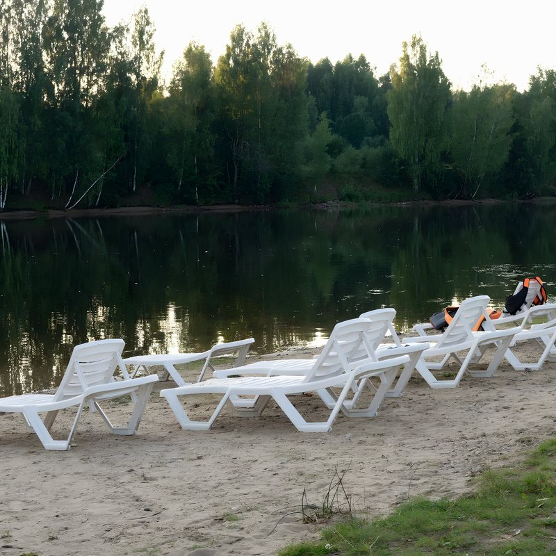

Баня с видом на Сить
Из парилки — панорамное окно на реку, с террасы — прямой выход к воде. Летом рядом песчаный пляж с шезлонгами и уличный бассейн.
- Баня «Скандик»панорамное окно из парилки, терраса, до 4 гостей5 000 ₽ / 2 часа
- Баня «Ситские традиции»русская баня с гостевой комнатой, до 6 гостей7 000 ₽ / 2 часа
- Уличный бассейнтерраса с шезлонгами среди лесабесплатно
- Песчаный пляжшезлонги и зонтики у рекидля гостей
При проживании от 5 ночей — 2 часа в бане «Скандик» и купеческое чаепитие в подарок